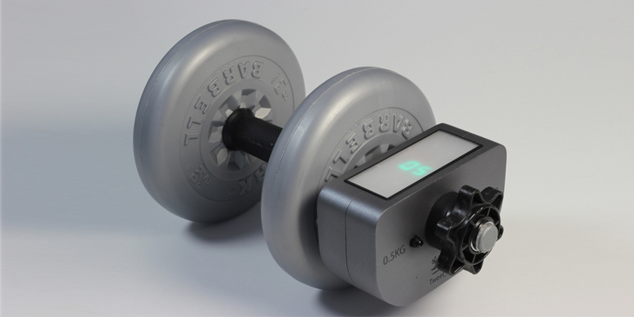

My product is designed to encourage people to exercise at home. Its universal design allows it to be easily attached to any dumbbell.
The device has two main functions, an offline and online mode. The offline mode has been designed to guide the user through the perfect bicep curl. Once this is mastered the online mode can be activated.
This product could be used effectively by fitness instructors to keep an eye on their clients when they are at home and could also be used as a fun competition between friends on twitter.